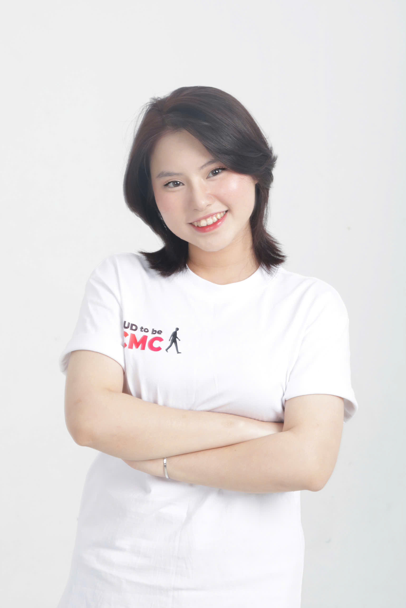
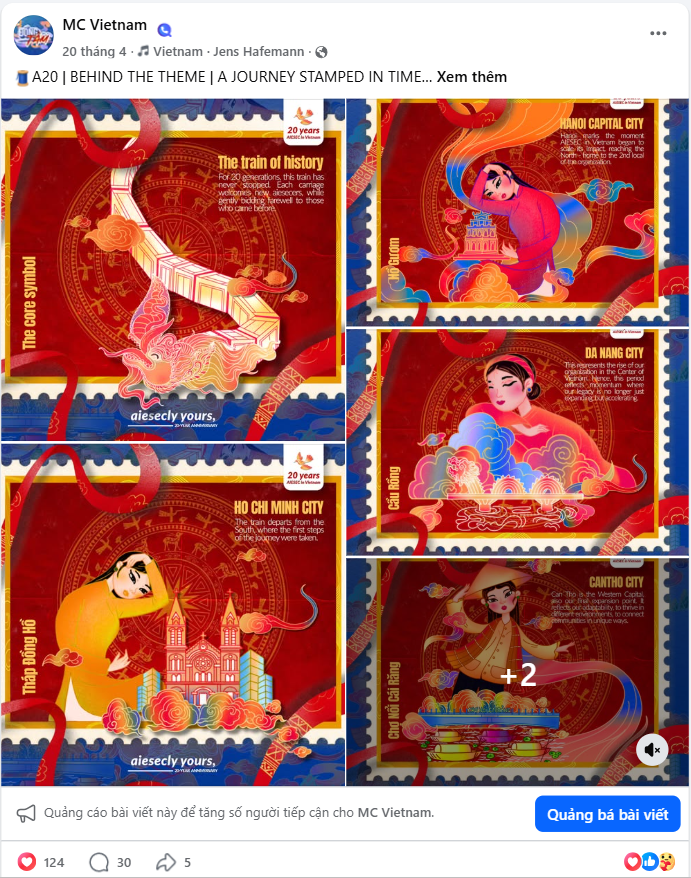
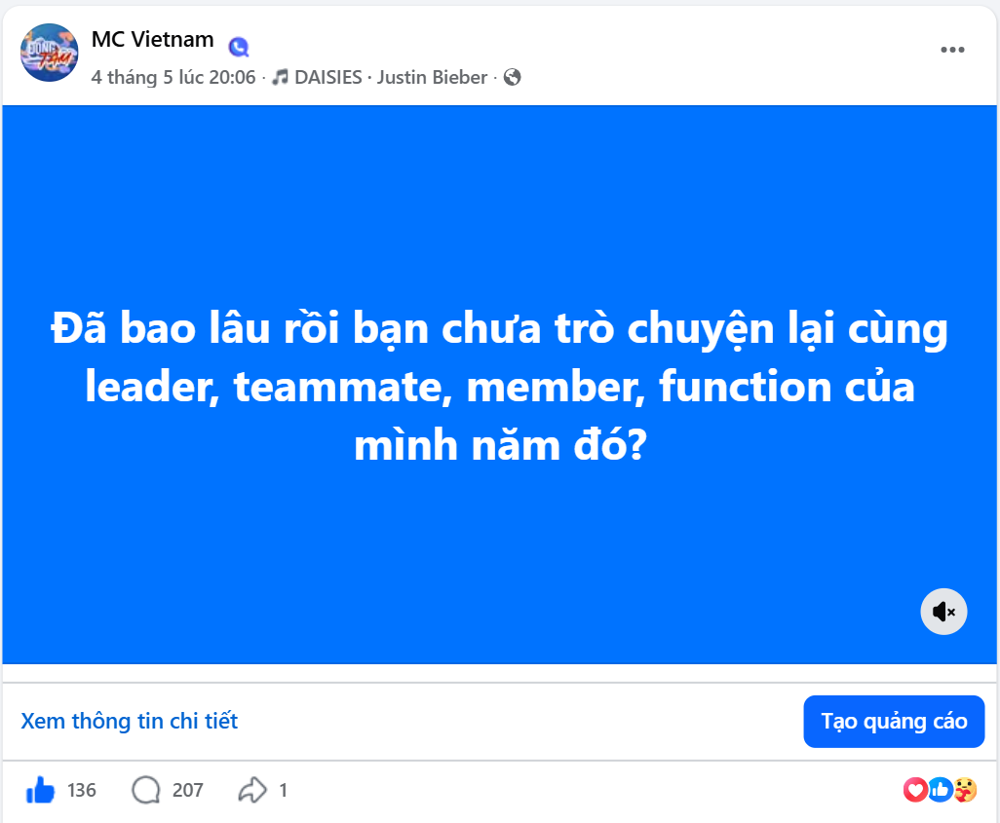
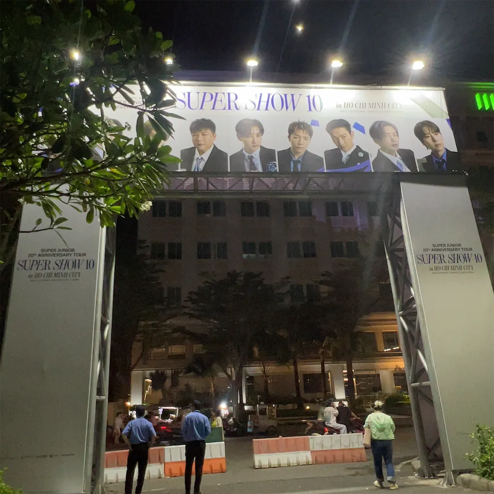
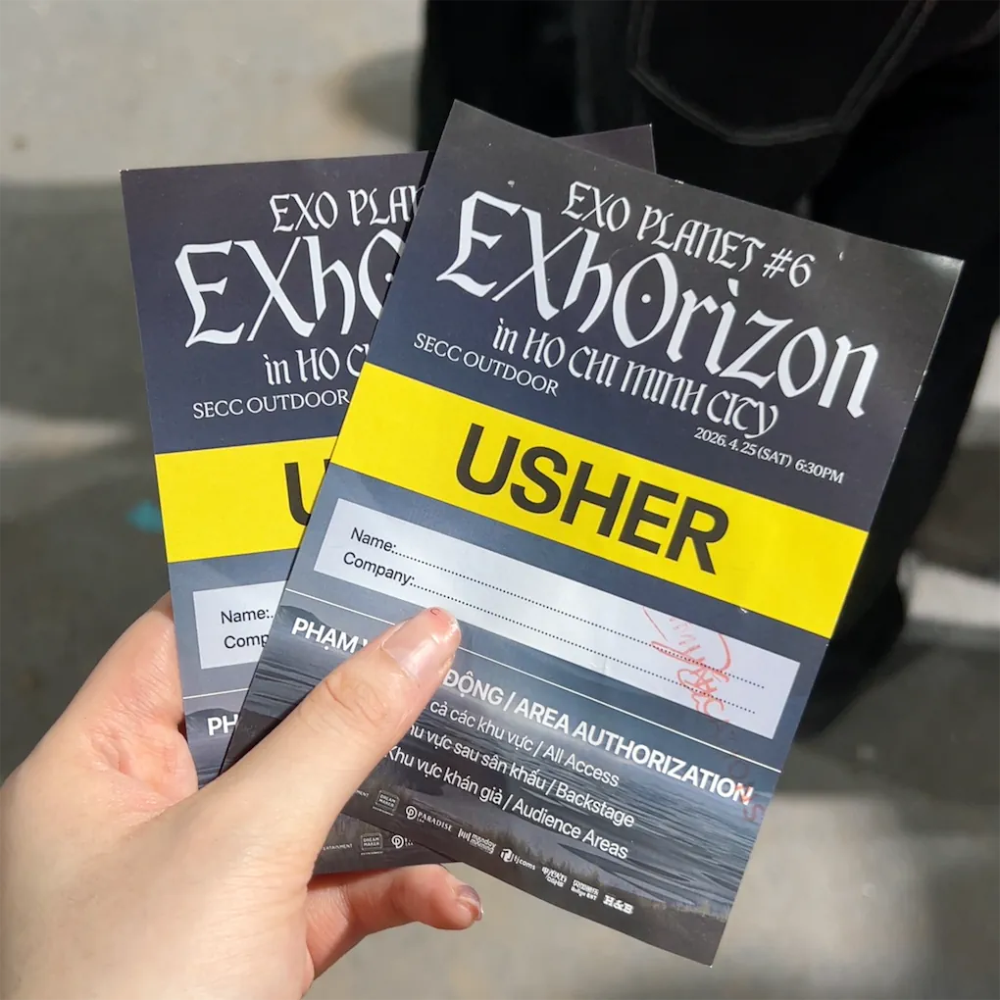
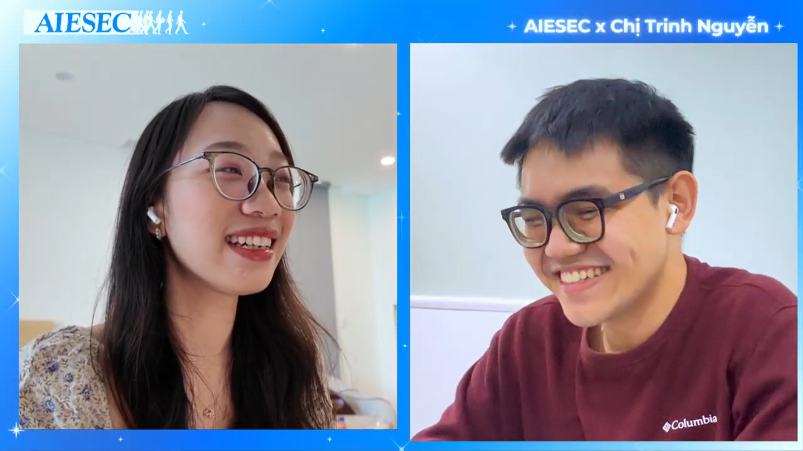

Portfolio 2026 · Event / Account Specialist
NGUYEN XUAN MINH THI
Event Operations & Account Specialist | Future Strategic Planner
Crafting intentional event experiences driven by operational strategy, multi-sensory storytelling, and human-centric values.
Thiết kế những trải nghiệm sự kiện có chủ đích, được định hình bởi chiến lược vận hành, nghệ thuật kể chuyện đa giác quan và các giá trị hướng về con người.

Positioning
Operations strategy · Account thinking · Human-centric event
design
Section 1 · Fast proof
Fast proof points
Section 2 · The Manifesto
The operating system behind my work.
My journey with AIESEC pushed me out of my comfort zone and gave me a practical arena to prove myself through live events, institutional stakeholders, partner portfolios, and high-pressure operations.
Value
I maximize stakeholder benefits with minimum wasted resources by understanding supply and demand, then turning that understanding into sustainable value propositions.
Emotion & Storytelling
A successful event must communicate a clear core message, touch real emotions, shape memory, and give participants a reason to stay connected after the moment ends.
Strategic Approach
I define strategy through three working standards: effective actions tied to objectives, efficient use of limited resources, and value-driven decisions with a clear purpose.
Section 3 · The Proof
Selected case studies


AIESEC × UNICEF Vietnam
Social Innovation Program | Institutional Account & Agenda Management
Sustainability & Human-Centric UX · Strategic Approach
Context & Challenge
A social innovation program for 100+ underserved participants required direct collaboration with UNICEF representatives to co-design content and manage experience quality while balancing UNICEF’s academic rigor with AIESEC’s inspirational atmosphere.
Strategy & Execution
As Agenda Manager, I managed content flow and onsite coordination. When sessions ran seriously overtime, I held a mid-program huddle with UNICEF advisors, compressed activities, and protected both timeline and learning quality.
8+ social innovation projects supported
Institutional client management
Program co-design


A20 · AIESEC in Vietnam
Sports Campaign & Closing Ceremony | Cross-functional Leadership
Emotion & Storytelling · Aesthetics
The 20-year milestone had to revive pride and reconnect alumni, partners, and current members. I led concept direction, progress coordination, and communication risk management across six scopes.
- Built a single source of truth to eliminate cross-scope information conflict.
- Designed multi-sensory experience spaces rooted in brand equity.
- Delivered record organic engagement: 135 likes and 205 comments.


Cổ Động Việt · Super Show 10 & EXO PLANET #6
Large-scale International Live Entertainment | On-ground Operation
UX · Efficient under pressure
In a fast, high-pressure concert environment with 4,000+ audiences per night, I coordinated ticketing, check-in, benefit exchange, and seating zones while keeping information accurate across teams.
- Opened an extra ticketing line and redeployed support to resolve a queue crisis.
- De-escalated international guest complaints in English in under five minutes.
- Maintained 0 customer-facing information errors and received Zone Leader praise.


Senior Brand & Public Relations Executive
B2B/B2C Partner Portfolio | Account Management & Experience Innovation
Value · Mutual supply-demand fit
Context & Challenge
I worked with a 2,000+ account portfolio across businesses, NGOs, press, and communities. The challenge was to create value propositions that solved partner pain points while respecting the limited resources of a student organization.
Evidence & Impact
I managed a 100+ contract pipeline, led a four-person team, and applied gain/pain diagnosis to position AIESEC’s youth network and communication space as measurable brand value.
80% meeting-to-contract conversion
9 to 6 days outreach timeline
Partner NPS 9+
Section 4 · Integrated Competency Matrix
Ready for Account & Operation, building toward Strategic Planning.
Client & Commercial Management
- Account Management across 2,000+ accounts
- Value Proposition Design using gain/pain framing
- Stakeholder Expectation Management
- Contract Fulfillment and pipeline tracking
- English Professional Communication
Event Operations & Experience Design
- On-ground execution under high pressure
- Crowd flow and logistics optimization
- Real-time agenda restructuring
- Multi-sensory space concept development
- KPI tracking through lead and lag goals